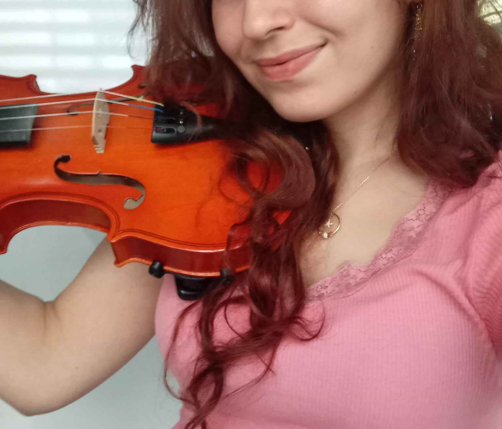

Şerefsizliğe maruz kalanların oylaması
Hakkımızda
Mimarların Mimarı, Şerefsizlerin En Şerefsizi
Günümüz mimarlığının öncü isimlerinden Deniz Yalçınkaya'nın en az mimarlık kadar iyi olduğu bir şey varsa o da soğuk espri ve şerefsizlikleridir.
Ayrıntılı Bilgi